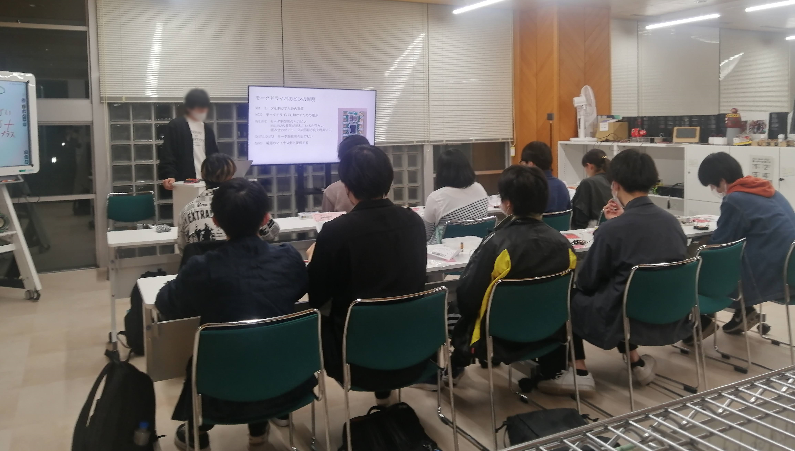

Lチカから、ロボットまで。
∨
∨
∨
サークル紹介
REMsとは
会津大学でロボット制作をするサークルです。
創立：２０１７年１１月１３日
部員数：２１名（今学期初め）
活動場所：学生ホール３階 Ｋ１
部員数：２１名（今学期初め）
活動場所：学生ホール３階 Ｋ１
部長から
活動内容
最初にすること
入部された方はまずＣ言語を学んでもらい、基礎的なハードウェア・ソフトウェアの技術を身につけてもらうため、「自分だけのライントレーサ」を作ってもらいます。電子工作がはじめてでも大丈夫。講義資料が完備されているので、無理なく進められます。先輩もみんな作ってるから、分からないことは好きな先輩に聞いてみよう！

趣味に応じて活動
ライントレーサが完成したら、自分の趣味に応じてプロジェクトを選択し、チームで活動していきます。
例えば、こんなコンテストに参加しています、、
例えば、こんなコンテストに参加しています、、
ETロボコン (ソフトウェア制御)
マイクロマウス (ソフトからハードまで)
Maker Faire(5,10月ころ)
部の方針
Hello World!こそ最大の進捗
とりあえず挑戦
出来る限り自作

とりあえず挑戦
出来る限り自作
興味を持った？
直前でもいいので、事前にツイッターやメールなどで連絡をいただければ、部室を開けたり、日程調整をしたり、何かしら対応します！分からないこと、相談したいこと、おやつカルパス食べたい等あれば、ツイッターにメッセージやメンションをおくってください！！ツイ廃の部員がすぐに対応します（笑）
４月中の活動時間は、水曜日の１４時から１６時です。それ以外の時間は、希望があれば開室します。
４月中の活動時間は、水曜日の１４時から１６時です。それ以外の時間は、希望があれば開室します。
お問い合わせ
以下の連絡先からお願いします。
会津大学関係者の方へ: メールで連絡する際は極力学内のアドレスから送ってください。
メールアドレス: maipenraiⓐu-aizu.ac.jp
Twitter iD: ⓐAizuRobo
アクセス
学生ホールの螺旋階段を３階まで上ってすぐの場所にあります。休日は駐輪場側の裏口から学生ホールに入ってください。以下に、駐輪場から部室に向かう動画を載せておきます。（ファイルサイズが２ＭＢほどあります。気を付けて！）